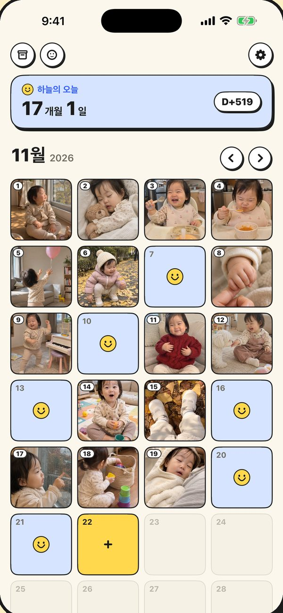
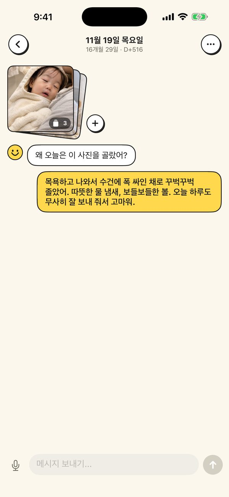
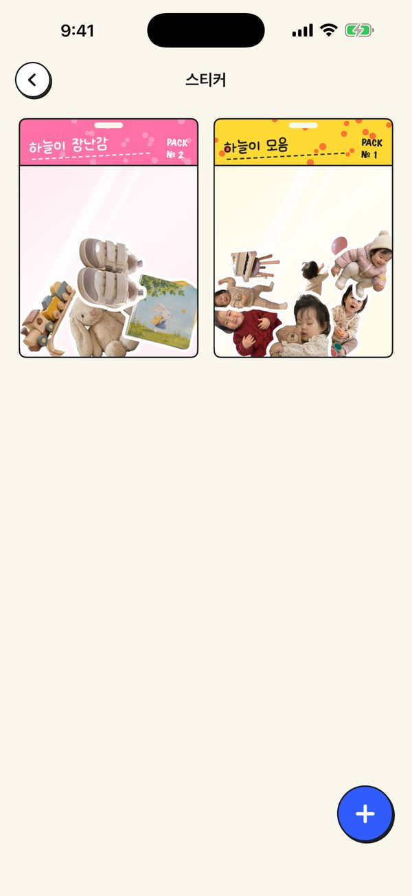
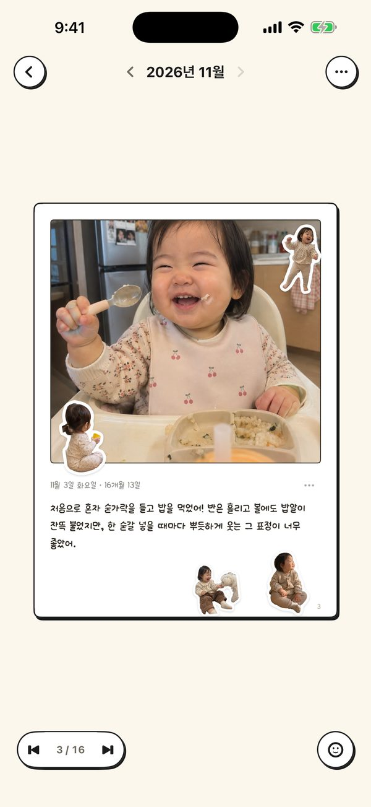
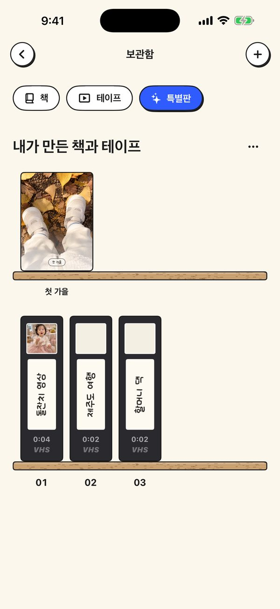
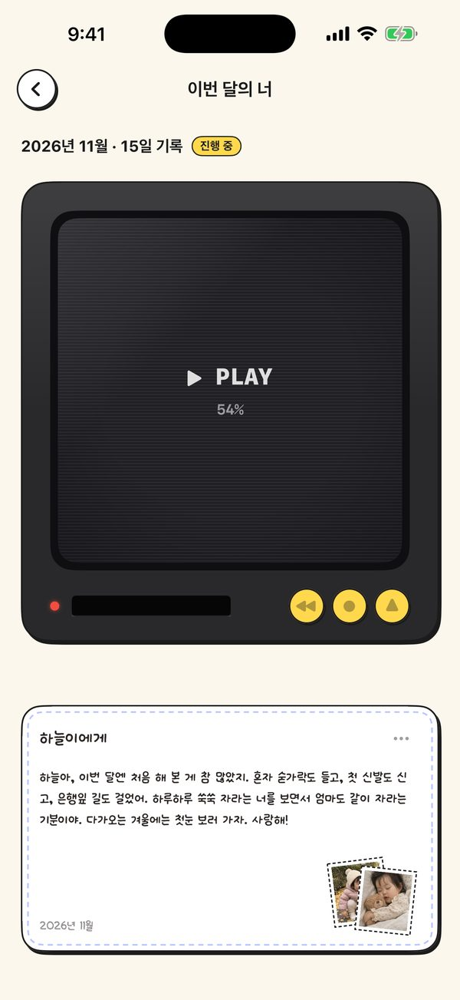
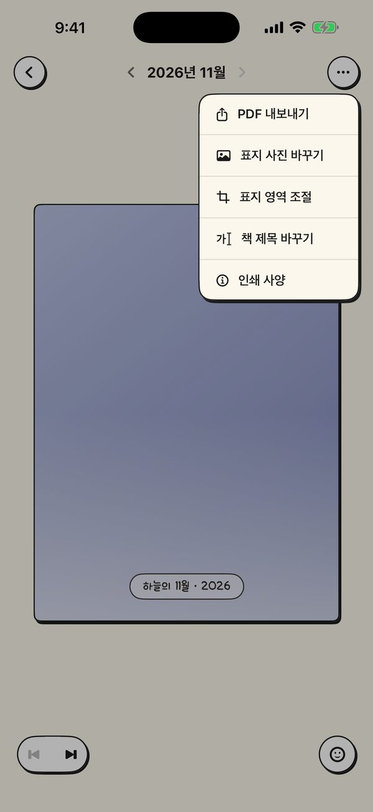

- 홈 달력에서 오늘 날짜의 노란 + 칸을 눌러요. 지난 날짜의 빈칸도 같아요.
- 그날 찍은 사진이 먼저 모여서 보여요. 마음에 드는 사진을 골라 다음을 눌러요.
- 사진 영역을 맞추고 다음을 누르면 기록 화면이 열려요.
- 오늘 이야기를 한 줄 적어요. 바쁜 날엔 사진만 남겨도 돼를 눌러 사진만 남겨도 돼요.
글은 나중에 써도 돼요. 사진만 있고 글이 없는 날은 달력 칸에 작은 노란 점이 보여요.
하루에 사진 한 장이면 충분해요. 모인 기록은 달마다 책과 테이프가 돼요.
글은 나중에 써도 돼요. 사진만 있고 글이 없는 날은 달력 칸에 작은 노란 점이 보여요.

사진마다 한 줄 메모 달기
메모는 책과 테이프에도 같이 들어가요. 책 안에서는 사진 쪽의 … → 메모 수정으로 고칠 수 있어요.

사진을 남기지 못한 날도 괜찮아요. 빈칸으로 두지 않고 "이날은 그냥 지나갔어요" 하고 표시해 둘 수 있어요.
다시 비우려면 스마일 칸을 한 번 눌러요. 그다음 + 칸을 누르면 그날 기록을 남길 수 있어요. 아직 오지 않은 날과 태어나기 전 날은 표시할 수 없어요.
스티커팩 열기
봉투 위 점선을 따라 가위를 옆으로 끝까지 밀면 팩이 열려요. 열린 시트에서 스티커를 끌어 옮기고, 두 손가락으로 크기를 바꿀 수 있어요. 스티커를 누르면 공유·메모·삭제가 나와요.
한 팩에는 스티커가 8개까지 들어가요. 팩 … 메뉴에서 봉투 모습이나 펼친 모습을 이미지로 공유할 수 있어요.

쪽에서 떼려면 스티커를 고르고 빨간 ✕를 눌러요. 서랍의 새 스티커로 바로 만들어 붙일 수도 있어요.

달마다 책과 테이프는 저절로 생겨요. 돌잔치나 여행처럼 특별한 날만 따로 모으고 싶을 때 특별판을 만들어요.
특별판은 보관함의 특별판 탭에 모여요. 길게 눌러 끌면 순서를 바꿀 수 있고, 책이나 테이프의 … → 기간 바꾸기로 날짜를 나중에 고칠 수 있어요. 하루로 만든 책에는 그날 사진이 한 장도 빠짐없이 들어가요.

편지는 그달 책에도 한 쪽으로 들어가요.

같은 메뉴에서 표지 사진, 표지 영역, 책 제목을 바꿀 수 있어요. 인쇄소에 맡길 때는 인쇄 사양을 확인해 주세요(완성 크기 94 × 128 mm).

iPhone 홈 화면을 길게 눌러 편집 → 위젯 추가 → Little Days를 골라요. 작은 위젯엔 최근 사진이, 중간 위젯엔 아이 개월 수와 최근 사진 네 장이 보여요. 위젯을 누르면 바로 오늘 기록으로 가요.